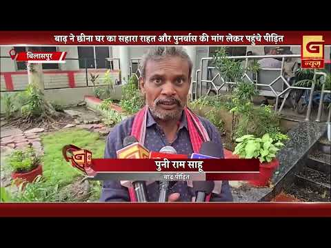
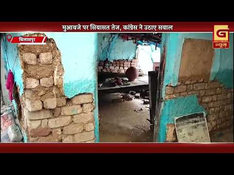
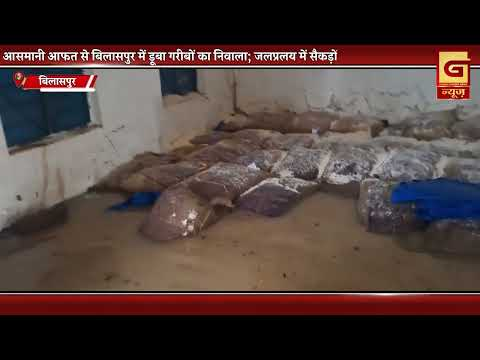
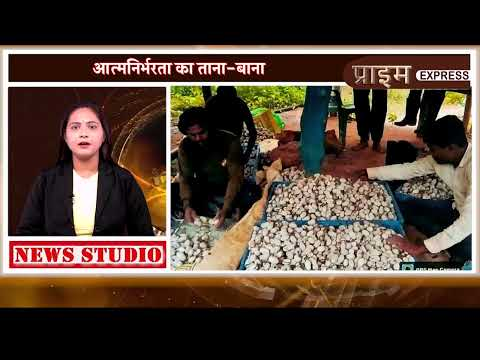

Bilaspur News Hub
1
EDUCATION
1
EVENT
21
GOVERNMENT
1
HEALTH
5
INFRASTRUCTURE
6
INSTAGRAM NEWS
2
NEWS
2
OTHER
26
POLICE
1
RAILWAY
3
SOCIAL
7
YOUTUBE VIDEOS
EDUCATION1

District Administration Bilaspur · Published: 2026-07-21 | Scraped: 2026-07-21 11:43:55
The District Administration of Bilaspur has released the results of the lateral entry examination held on 19 July 2026 for Class 11 at the OBC Girls’ Residential School. Candidates can check their scores on the official website. The announcement marks a key step for admissions.
EVENT1

The Hitavada · Scraped: 2026-07-21 08:11:42
In a thrilling match, Spain secured a 1-0 victory over Lionel Messi's team, ending his reign as king of the pitch. The win marked a historic moment for Spanish football, celebrating an underdog triumph.
GOVERNMENT21

Nai Dunia Bilaspur · Published: Tue, 21 Ju | Scraped: 2026-07-21 05:03:16
A senior police official has approached the Chhattisgarh High Court alleging irregularities in promotion procedures and seeking a report to be submitted to the DGP.
Nai Dunia Bilaspur · Published: Tue, 21 Ju | Scraped: 2026-07-21 08:11:42
The Chhattisgarh High Court ruled that a married daughter is not 'parai' and is eligible for compassionate appointment, setting a historic legal precedent.

Nai Dunia Bilaspur · Published: Tue, 21 Ju | Scraped: 2026-07-21 08:11:42
The new smart toilet in Bilaspur remains locked while a nearby cafe operates, leaving women with no choice but to defecate in the open. Residents demand immediate repairs and proper management of public sanitation facilities.

Nai Dunia Bilaspur · Published: Tue, 21 Ju | Scraped: 2026-07-21 08:11:42
The snakebite compensation scam in Bilaspur has already jailed doctors, lawyers and soldiers, and now senior officials like the ADM and tehsildar are under scrutiny. The case highlights deep corruption in the compensation system.

Nai Dunia Bilaspur · Published: Tue, 21 Ju | Scraped: 2026-07-21 11:43:55
The Chhattisgarh High Court declared the recent amendment to promotion rules at the Forest Development Corporation unlawful and set aside the merit‑based decision. This ruling restores previous norms and may lead to reinstatement of affected officers. The court emphasized strict adherence to statutory procedures.

Nai Dunia Bilaspur · Published: Tue, 21 Ju | Scraped: 2026-07-21 13:18:06
छत्तीसगढ़ हाई कोर्ट ने फैसला सुनाया कि डेयरी योजना में सब्सिडी के लिए सरपंच का निवास प्रमाण पत्र मान्य नहीं है; केवल तहसीलदार का प्रमाण पत्र ही मान्य होगा। यह निर्णय दुरुपयोग को रोकने और पात्रता सत्यापन सुनिश्चित करने के लिए लिया गया है।

Nai Dunia Bilaspur · Published: Tue, 21 Ju | Scraped: 2026-07-21 15:32:40
The Chhattisgarh High Court ruled that tehsildars lack authority to issue caste certificates, emphasizing proper procedural hierarchy. This decision may affect many applicants and prompt reforms in certificate issuance processes.

Lokswar · Published: Tue, 21 Ju | Scraped: 2026-07-21 15:32:40
The Chhattisgarh government transferred ten police officials to the Economic Offences Wing and Anti-Corruption Bureau on July 13, 2026. The reshuffle aims to strengthen investigative units handling financial crimes. Details of the new postings have been issued by the General Administration Department.
Lokswar · Published: Tue, 21 Ju | Scraped: 2026-07-21 15:32:40
Collector Sanjay Agarwal ordered surveys and immediate cases to speed flood relief for affected people. The move aims to ensure swift assistance reaches victims.

Nai Dunia Bilaspur · Published: Tue, 21 Ju | Scraped: 2026-07-21 17:08:07
A massive fraud involving Rs 17 crore in snake bite compensation claims has been uncovered in Bilaspur. The mastermind remains at large while SIMS doctors are under investigation for possible involvement.

Lokswar · Published: Tue, 21 Ju | Scraped: 2026-07-21 17:08:07
Chief Secretary Vikaashsheel convened a high-level meeting with all secretaries to assess the progress of ongoing government schemes. The review aimed to ensure effective implementation and address any gaps.

Easy News · Scraped: 2026-07-21 17:08:07
Activists are pushing for Gau Mata to be recognized as a national mother and for a unified central law banning cow slaughter. A six‑phase nationwide campaign will be launched to rally support for these demands.

The Hitavada · Scraped: 2026-07-21 08:11:42
Madhya Pradesh government has introduced the Uniform Civil Code Bill in the assembly, aiming to implement a common civil law for all citizens. The move follows nationwide discussions, and the bill is now under consideration.
The Hitavada · Scraped: 2026-07-21 08:11:42
Russian President Vladimir Putin held talks with North Korean Foreign Minister Choe Son-hui, discussing bilateral relations and regional issues. The meeting underscored cooperation between Moscow and Pyongyang amid ongoing geopolitical tensions. No specific agreements were announced yet.
The Hitavada · Scraped: 2026-07-21 08:11:42
Andy Burnham has assumed the role of the United Kingdom's new prime minister, marking a shift in British politics. The appointment follows a period of political uncertainty and signals a new leadership direction.
The Hitavada · Scraped: 2026-07-21 08:11:42
Chief Minister Omar and the National Conference held a protest in Delhi demanding full statehood for Jammu and Kashmir. The demonstration highlights ongoing political demands and the central government's stance on the region's special status.
The Hitavada · Scraped: 2026-07-21 08:11:42
The Prime Minister expressed optimism that the monsoon parliamentary session will be productive, focusing on key legislation and development agendas. He urged all parties to cooperate for effective governance.
BREAKINGDPDC approves Rs 1,503.50 cr annual budget / डीपीडीसी ने 1,503.50 करोड़ के वार्षिक बजट को मंजूरी दी
The Hitavada · Scraped: 2026-07-21 08:11:42
The DPDC has given its nod for an annual outlay of Rs 1,503.50 crore, while Bawankule stressed the need for a three‑year roadmap to guide future projects.

G News Bilaspur · Published: 2026-07-21 | Scraped: 2026-07-21 17:08:07
After the floods, displaced families have approached the collector’s office demanding immediate relief and long‑term rehabilitation measures. Authorities are expected to assess the damage and allocate resources.

G News Bilaspur · Published: 2026-07-21 | Scraped: 2026-07-21 17:08:07
The flood impact survey is ongoing, with over 1,400 individuals already registered for assistance. Officials are working to expedite relief distribution based on the updated data.
HEALTH1

Lokswar · Published: Tue, 21 Ju | Scraped: 2026-07-21 15:32:40
A unlicensed clinic was found operating close to the Chief Medical and Health Officer’s office in Bilaspur, prompting scrutiny of the health department’s oversight. The discovery highlights systemic lapses in regulating medical facilities. Authorities have initiated inspections and promised stricter enforcement.
INFRASTRUCTURE5
.jpg)
Nai Dunia Bilaspur · Published: Tue, 21 Ju | Scraped: 2026-07-21 05:03:16
Heavy rains have uncovered numerous potholes and damaged road layers in Bilaspur, highlighting alleged corruption in construction. Authorities are now under pressure to repair the deteriorating infrastructure.

Nai Dunia Bilaspur · Published: Tue, 21 Ju | Scraped: 2026-07-21 11:43:55
A bridge closure in Ansupmar Tiger Reserve stopped several buses carrying school students, leaving them stranded for about four hours. The incident highlights safety and connectivity concerns in the reserve area. Local authorities are working to restore normal traffic.

The Hitavada · Scraped: 2026-07-21 08:11:42
A tragic accident on the Samruddhi E-way resulted in six fatalities, three of them family members, after their vehicle caught fire. The incident underscores the need for improved road safety measures and emergency response.

The Hitavada · Scraped: 2026-07-21 08:11:42
The state government has cleared the Kanhan link for the second phase of Nagpur Metro, with a Rs 310.35 crore tender process set to begin shortly.

G News Bilaspur · Published: 2026-07-21 | Scraped: 2026-07-21 11:43:55
Musaladhar rain destroyed hundreds of quintals of grain stored in dozens of ration shops in Bilaspur, causing huge losses. Authorities are assessing damage and planning relief measures.
INSTAGRAM NEWS6

Surabhi Thakur, the Namhol ward's district council member, was accorded a warm reception in Pohni, where she participated in a community feast. The event highlighted local camaraderie and appreciation for her work.
Chief Minister Vishnu Deo Sai stated that the prosperity of farmers is the government's highest priority, pledging support for agricultural growth. His statement reflects a commitment to strengthening the farming community.
The official Instagram account of Bilaspur district posted a new update, sharing information with followers. The post was authored by @bilaspurdist, providing community news or announcements.
A special train will operate from Itwari to Madhupur for the Shravani Mela, offering pilgrims easier access to Baidyanath Dham starting 1 August. This service aims to ease the journey for devotees heading to the temple.
Heavy rains have damaged the ramp at Chaiturgarh temple, forcing authorities to block vehicle access until repairs are completed. The damage highlights the need for better drainage and maintenance.
Several MEMU and passenger trains have been cancelled for 22‑23 July, urging travelers to verify train status before planning their journeys. The cancellations are due to ongoing maintenance and weather-related disruptions.
NEWS2

Lokswar · Published: Tue, 21 Ju | Scraped: 2026-07-21 11:43:55
Monsoon has regained speed in Chhattisgarh, prompting orange and yellow alerts in multiple districts. Weather officials warn of heavy rainfall in the coming days.

BREAKINGUkraine fires over 400 drones at Russian capital / यूक्रेन ने रूसी राजधानी पर 400 से अधिक ड्रोन दागे
The Hitavada · Scraped: 2026-07-21 08:11:42
Ukraine launched more than 400 drones toward Moscow, striking various targets in the Russian capital region. The attack reflects escalating hostilities following the prolonged conflict. Russian defenses reported intercepting some drones, but damage details are still emerging.
OTHER2

G News Bilaspur · Published: 2026-07-21 | Scraped: 2026-07-21 17:08:07
No detailed story provided; appears to be a placeholder for a news item.

G News Bilaspur · Published: 2026-07-20 | Scraped: 2026-07-20 22:51:36
G News Bilaspur reports the latest updates from the G NEWS platform, covering local events and information. It acts as a regular bulletin for community news.
POLICE26

Nai Dunia Bilaspur · Published: Tue, 21 Ju | Scraped: 2026-07-21 05:03:16
Police have arrested three suspects in the Bilaspur chowkidar murder case, who were operating from Patna, Bangalore and Prayagraj. One accomplice remains at large and is being pursued by authorities.

CG Wall · Published: Tue, 21 Ju | Scraped: 2026-07-21 05:03:16
Two police officers from CIMS chowki were arrested for orchestrating a fake snakebite compensation scam, exploiting victims' claims. The scheme started as soon as bodies arrived, prompting a major crackdown by agencies.

CG Wall · Published: Tue, 21 Ju | Scraped: 2026-07-21 05:03:16
A joint operation by Konni police and ACCU dismantled an illegal gambling operation in Bilaspur, apprehending nine suspects. The raid resulted in the seizure of cash and equipment worth several lakhs, curbing local betting activities.

Lokswar · Published: Tue, 21 Ju | Scraped: 2026-07-21 05:03:16
Janjgir-Champa SP Vijay Kumar Pandey suspended a sub-inspector for negligence in a case investigation, emphasizing accountability. The action underscores the department's strict stance on procedural lapses.

Nai Dunia Bilaspur · Published: Tue, 21 Ju | Scraped: 2026-07-21 08:11:42
A tractor carrying paddy planting workers overturned in Hirri, resulting in two fatalities and six injuries. The injured have been taken to hospital, and police have initiated a rescue and investigation.

Nai Dunia Bilaspur · Published: Tue, 21 Ju | Scraped: 2026-07-21 08:11:42
A seven‑year‑old girl died after a speeding bike collided with the auto‑rickshaw in which her mother was sitting to hand over money. The tragic accident underscores road safety issues and prompted a police investigation.

Lokswar · Published: Tue, 21 Ju | Scraped: 2026-07-21 08:11:42
Two police personnel were arrested in connection with the snakebite compensation fraud, SSP Rajnesh Singh disclosed. The arrests are part of a widening investigation that has already implicated several officials.

CG Wall · Published: Tue, 21 Ju | Scraped: 2026-07-21 11:43:55
Two women laborers died and several were injured when a fast-moving tractor overturned while rice transplanting in Medapar village, Takhatpur. The incident highlights unsafe working conditions for migrant workers.
Lokswar · Published: Tue, 21 Ju | Scraped: 2026-07-21 11:43:55
A father in Kushmuli village killed his son with an axe after a prolonged daily dispute, ending their patience. Police have registered a case and are investigating the motive.

Nai Dunia Bilaspur · Published: Tue, 21 Ju | Scraped: 2026-07-21 13:18:06
सकरी में एक किन्नर की उसके ही साथी द्वारा हत्या कर दी गई और शव को धान के खेत में फेंक दिया गया। यह घटना क्षेत्र में किन्नरों के बीच बढ़ती हिंसा को उजागर करती है। पुलिस ने आरोपियों की गिरफ्तारी के लिए जाँच शुरू कर दी है।
Lokswar · Published: Tue, 21 Ju | Scraped: 2026-07-21 13:18:06
जांजगीर-चांपा के एसपी ने होटल और लॉज संचालकों को प्रवासियों की निगरानी करने और संदिग्ध गतिविधियों की सूचना देने का निर्देश दिया। यह कदम जिला सुरक्षा को मजबूत करने और अवैध प्रवेश को रोकने के लिए उठाया गया है। नियमित समन्वय बैठकें आयोजित की जाएँगी।
Lokswar · Published: Tue, 21 Ju | Scraped: 2026-07-21 13:18:06
बिलासपुर जिले के हिर्री थाना क्षेत्र में रोपा लगाने जा रहे मजदूरों से भरा ट्रैक्टर पलट गया, जिसमें दो महिलाओं की मौत हो गई और कई अन्य घायल हो गए। घायलों को तुरंत अस्पताल ले जाया गया और पुलिस ने दुर्घटना की जाँच शुरू कर दी है।

BREAKINGFather kills son over motorcycle dispute / पिता ने मोटरसाइकिल विवाद के बाद बेटे की जान ले ली
CG Wall · Published: Tue, 21 Ju | Scraped: 2026-07-21 15:32:40
In Kusmuli village, a father fatally assaulted his son following a dispute over a motorcycle, resulting in the son's death. The incident highlights rising domestic violence and the need for conflict resolution. Police have registered a case and are investigating.

CG Wall · Published: Tue, 21 Ju | Scraped: 2026-07-21 15:32:40
A young woman in Bilaspur had her WhatsApp account compromised by a former boyfriend, who leaked edited private videos to ruin her reputation. The incident underscores the dangers of cyberstalking and the need for stronger digital safety measures. Authorities are investigating the breach.
Lokswar · Published: Tue, 21 Ju | Scraped: 2026-07-21 15:32:40
In Bilaspur, a kinner named Tanni Khan was killed amid a guru-chela dispute, prompting swift police action. The accused was apprehended within hours, reflecting rapid response.

Nai Dunia Bilaspur · Published: Tue, 21 Ju | Scraped: 2026-07-21 17:08:07
A transgender person was murdered in Bilaspur after a dispute over his statement claiming he had no guru. Police have launched an investigation into the killing.

Nai Dunia Bilaspur · Published: Tue, 21 Ju | Scraped: 2026-07-21 17:08:07
The Supreme Court denied relief to Ajay Thakur, upholding his life imprisonment for murdering his wife by burning her alive. The verdict ends his appeals in the brutal case.

CG Wall · Published: Tue, 21 Ju | Scraped: 2026-07-21 17:08:07
IG Ram Gopal Garg introduced a zero tolerance policy assigning a dedicated officer to each criminal in Bilaspur. The move aims to make it harder for offenders to evade capture.

CG Wall · Published: Tue, 21 Ju | Scraped: 2026-07-21 17:08:07
Civil Line police uncovered an illegal hookah bar operating in Bilaspur's Business Bihar, cracking down on violations of smoking laws. The raid highlights ongoing efforts to curb unauthorized entertainment venues.
Lokswar · Published: Tue, 21 Ju | Scraped: 2026-07-21 19:03:57
In a major anti‑drug operation, Bilaspur police raided a clandestine hookah bar in Byapar Vihar and uncovered illegal tobacco trade. The bar’s operator escaped, prompting a manhunt by authorities.
RAILWAY1

Nai Dunia Bilaspur · Published: Tue, 21 Ju | Scraped: 2026-07-21 05:03:16
Indian Railways has cancelled eight passenger trains in Chhattisgarh due to a major block, and diverted the Howrah‑bound express to Santragachi. Passengers are advised to check revised schedules.
SOCIAL3

Councillor receives death threat via unknown call / पार्षद को अनजान नंबर से जान से मारने की धमकी
Nai Dunia Bilaspur · Published: Tue, 21 Ju | Scraped: 2026-07-21 05:03:16
While sitting in his office, a Sakri councillor received a threatening call from an unknown number, including abuses and a warning to kill him. Police are investigating the source of the call.

BREAKINGJanadarshan reveals public woes: justice, jobs, compensation demanded / जनदर्शन में लोगों की समस्याएं उजागर, इंसाफ, रोजगार, मुआवजे की मांग
CG Wall · Published: Tue, 21 Ju | Scraped: 2026-07-21 11:43:55
The Janadarshan event at Bilaspur’s district office highlighted diverse public grievances, including demands for justice, employment, and compensation for destroyed homes. Officials listened and promised to address the issues. The session underscored the need for swift grievance redressal.

BREAKINGGuru-chela dispute ends in eunuch murder, arrests made / गुरु-चेला विवाद, किन्नर की हत्या, कुछ गिरफ्तार
CG Wall · Published: Tue, 21 Ju | Scraped: 2026-07-21 19:03:57
A dispute over the traditional guru‑chela relationship in Bilaspur escalated into a violent murder of a transgender person. Police have arrested several suspects, while the community is outraged over the killing.
YOUTUBE VIDEOS7
Pilgrims angry over train cancellations during the Sawan month, which disrupted religious travel. Authorities face pressure to restore services and offer alternative arrangements for devotees.


The final morning bulletin for Bilaspur on 21 July 2026 provides the latest updates and announcements for the region.


A routine evening news bulletin from Bilaspur Grand News covering latest updates as of 21 July 2026.
The brutal murder of Tanni, a kinner, has ignited strong anger among the community, demanding justice and faster police action.
At Belghana government school, students were made to sweep the premises, raising concerns over child labor and school discipline.
Alleged encroachment on the tehsil complex parking area has caused severe disruption to official operations. Authorities are reportedly struggling to restore order and manage the blocked access.
The debate over compensation has intensified, with Congress demanding clarity on the distribution and criteria. The political confrontation highlights concerns about transparency and fairness in the compensation process.